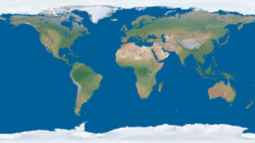

| Copyright | Written by David Himmelstrup |
|---|---|
| License | Unlicense |
| Maintainer | lemmih@gmail.com |
| Stability | experimental |
| Portability | POSIX |
| Safe Haskell | None |
| Language | Haskell2010 |
Reanimate.Builtin.Images
Description
Collection of built-in images.
Synopsis
- svgLogo :: SVG
- haskellLogo :: SVG
- githubIcon :: SVG
- githubWhiteIcon :: SVG
- smallEarth :: Image PixelRGBA8
Documentation
haskellLogo :: SVG Source #
githubIcon :: SVG Source #
smallEarth :: Image PixelRGBA8 Source #
300x150 equirectangular earth
